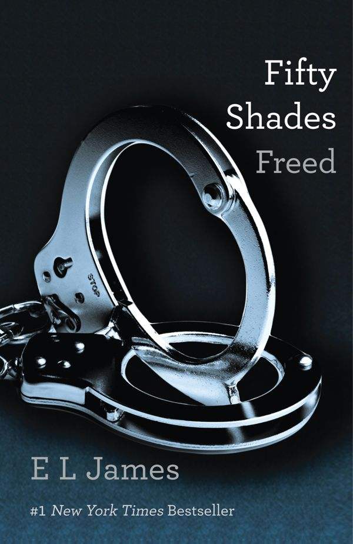

Fifty Shades Freed
by E. L. James, 2012
- Part of
- Fifty Shades (#3)
- Description
- "Christian, I've been yours since I said yes." I scoot forward, cupping his beloved face in my hands. "I'm yours. I will always be yours, husband of mine. Now, I think you're wearing too many clothes."
When unworldly student Anastasia Steele first encountered the driven and dazzling young entrepreneur Christian Grey it sparked a sensual affair that changed both of their lives irrevocably. Shocked, intrigued, and, ultimately, repelled by Christian's singular erotic tastes, Ana demands a deeper commitment. Determined to keep her, Christian agrees.
Now, Ana and Christian have it all—love, passion, intimacy, wealth, and a world of possibilities for their future. But Ana knows that loving her Fifty Shades will not be easy, and that being together will pose challenges that neither of them would anticipate. Ana must somehow learn to share Christian's opulent lifestyle without sacrificing her own identity. And Christian must overcome his compulsion to control as he wrestles with the demons of a tormented past.
Just when it seems that their strength together will eclipse any obstacle, misfortune, malice, and fate conspire to make Ana's deepest fears turn to reality.
Discover the world of Fifty Shades of Grey:
• An Instant #1 New York Times Bestseller
• More than 165 Million Copies Sold Worldwide
• One of 100 Great Reads in the Great American Read
• 133 Weeks on the New York Times Bestseller List
This book is intended for mature audiences. - Publication
- Vintage Books
- Publication date
- April 17, 2012
- ISBN
- 9780345803504, 0345803507
- Call number
- 823.92